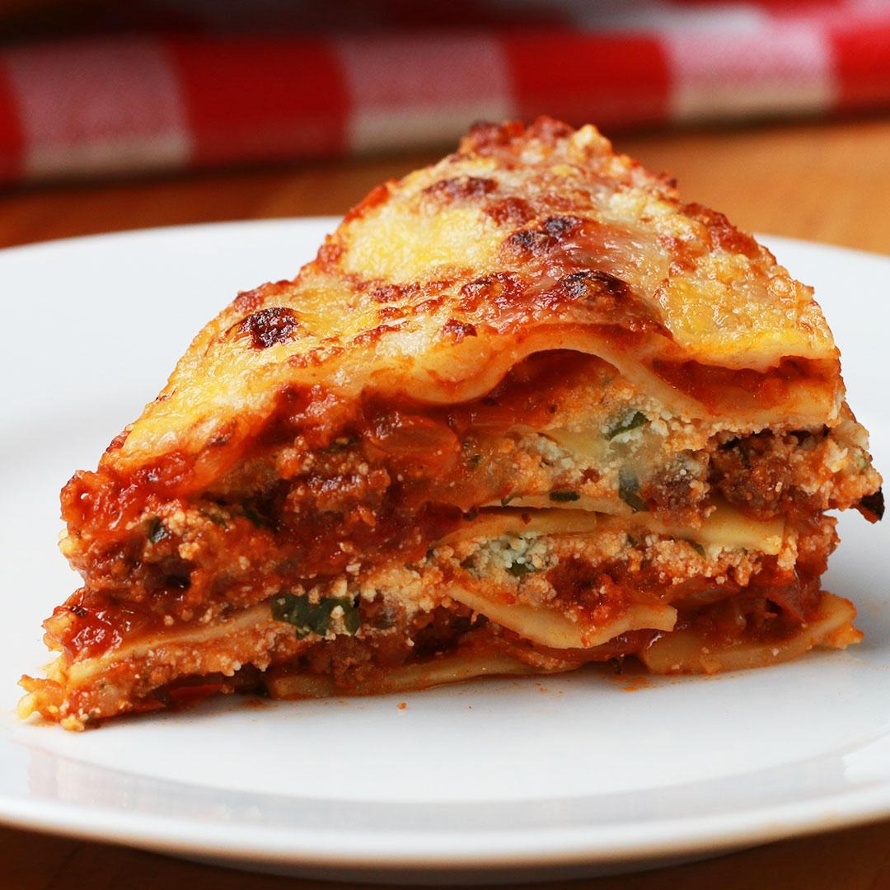

Instant Pot Lasagna!

This easy Instant-Pot Lasagna is a great dish to whip up for a quick weeknight dinner.
Made with all of the classic flavors--garlic, marinara, ricotta, mozzarella,
and Parmesan cheese--this recipe is sure to please. Add a touch of
red pepper flakes for a little kick!
This dish will surely KNOCK YOUR SOCKS OFF! a great
dish the best dish its YUGE
What you will need to make this one of a kind meat pasta yum yum yum
4 Serving size!
- 1/2LB ground beef
- 1 medium white onion DICED FOO
- 4 cloves glaric minced
- 1 teaspoon kooooosher salt... i guess... if you want
- 2 teaspoons dried oregano, you can usually find this behind the gas
station, my buddy steve sells it
- 1/2 teaspoon red PEPPPA FLAKES
- 2 cups marinara sauce
- then you figure out the rest I ain't your parents you a grown ass adult
make the meat pasta youself foo
I guess I'll tell you how to do it, but I mean come on YOUTUBE IT
- Set the Instant-Pot to sauté. Add the ground beef and cook for 5-6 minutes, until no longer pink. Add the onion, garlic, salt, oregano, and red pepper flakes and cook for 3-4 minutes more, until the onions are translucent. Add the tomato sauce and stir to combine, then carefully remove the insert from the Instant-Pot. Let cool for 5 minutes, then transfer the tomato sauce to a bowl and wash and dry the insert.
- In a medium bowl, combine the ricotta, 1 cup (100 G) of mozzarella, ½ cup (55 G) of Parmesan, the parsley, and egg. Mix well.
- Add the olive oil to a 7-inch (17 cm) springform pan and brush in an even layer over the bottom.
- Arrange a layer of lasagna noodles on the bottom of the pan, breaking the noodles to fit if necessary. Top with a layer of sauce, then half of the ricotta mixture. Add another layer of noodles, sauce, and the rest of the ricotta. Finish with the remaining noodles and sauce. Cover the pan tightly with foil.
- ok go youtube it you got this sport I believe in you!
- ENJOY MY FRIEND!